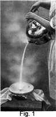
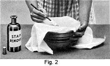
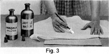

1931 - Laundering and Dry Cleaning
Woman's Institute of Domestic Arts & Sciences,
by Mary Brooks Picken
Stain Removing
SCOPE AND EQUIPMENT
24. Frequently it is the stains or spots on fabrics, rather than the dust and soil from wear, that prompt cleaning. And often a fabric is so badly soiled that certain spots or stains must be removed before it can be either washed or dry cleaned. Consequently, spotting or stain removing, although a complete subject in itself, is here treated as the first step in dry cleaning, and the instruction concerning it is given previous to that on cleaning by immersion in dry-cleaning fluids.
Another time when stain removing may take place is between the dry-cleaning baths. In the treatment of very soiled garments, several baths are sometimes necessary, and often when the garment comes out of the first bath the spots are much more visible, and therefore more easily removed, than before. They may appear again in the second bath, but should be treated again and again until no trace is left.
25. To realize how important stain removing is, one has only to go into the dry-cleaning establishments and look into the stain-removing department. Every dry-cleaning establishment employs skilled workmen known as "spotters," who do nothing but remove spots in garments, either before the first cleaning bath or between the baths. These men are the highest-paid workmen in the establishments.
26. Spotting Reagents.—Numerous cleaning agents and cleaning mixtures are in use for spotting purposes. Some of these are commercial products, or prepared stain removers, which are obtainable at drug stores and which are easy to use because of the complete directions accompanying them. The aim here, however, is to give simply the materials easily obtainable and the methods easy of execution in the home. The most common agents have already been mentioned in Arts. 6 to 23, inclusive.
27. Equipment for Using Reagents.—To use spotting materials, provide the following equipment:
A soft brush for brushing soil from firm materials.
Blotting paper or a pad of old muslin to lay under the spot.
A medicine dropper for applying the reagent.
A tampon of cheesecloth for applying the reagent.
A small sponge for applying cold water after using the reagent.
Small, unpainted blocks of wood with rounded edges may be procured or made, if much cleaning is to be done, to slip under spots that are being cleaned.
An uncovered ironing board, or one protected with a smooth, unpainted wooden cover over the padding, will also be found helpful to handle waists and skirts, as the garment may be turned easily on the board to clean the entire surface.
METHODS FOR REMOVING STAINS
28. Preliminary Cautions.—In removing stains, it is necessary to consider the kind and color of the material to be cleaned, the character of the stain, and its effect on the color. Know first your material, then know your stain, and if the cause of the spot is not known, experiment on a part of the article that will not be seen when it is being worn. Use the simplest reagents first and have them well diluted so that no stronger reagents than necessary are used. Never allow a reagent to remain in the material. Also, when using acids and such solutions as will be harmful if they spread, use a medicine dropper, since the smallest amount can then be dropped on, and confined entirely to, the spot or stain.
One of the secrets of successful stain removal is to have plenty of padding underneath the spot to absorb the liquid, and to change the pad as it becomes wet. Placing a stain downwards on the pad also helps, for then the stain can be forced out rather than drawn through the material to the other side.
29. General Procedure.—In using chemicals, work quickly and give several slight applications over a pad of blotting paper or muslin. Rather than allow much moisture on the fabric, be sure to use blotting paper or muslin on top, also. After applying a chemical to washable material, dip the fabric into clear water or a prepared solution that will neutralize its effect, as the chemical may injure the material if left in.
In cleaning silks, special care is necessary in the use of spotting agents, which should be applied in weak solution. A very good method is to outline the stain with a corner of a moistened cake of soap before beginning work, thus confining the action of the chemicals used. This, of course, can be done only on fabrics that will not be injured by the soap or that can be washed afterwards to remove the soap.
In some cases, the stain is so bad or of such long standing that to attempt to remove it is practically useless. Then, it would be advisable to cover the stained portion, cut it out and applique something in place of it, or recut the article to dispense with the stain.
30. Summary of Precautions.—In short, then, the precautions necessary to observe in spotting are:
- Consider the kind of material.
- Consider the color of material.
- Consider the nature of the stain.
- Use the simplest reagents first.
- Use weak solutions first.
- Use a medicine dropper.
- Provide plenty of padding.
- Change the padding frequently.
- Place a stain downwards and work from the wrong side.
- Work quickly.
Never allow a reagent to remain in the fabric. Rinse reagents out with water or use acids and alkalies to neutralize each other.
31. Removing Fresh Stains.—Treating fresh stains immediately prevents the stain from spreading and sinking into the material. This fact cannot be too strongly emphasized, for it always means the saving of considerable time, energy, and cleanser, and may sometimes mean the saving of a fabric, because it is the lack of prompt attention that makes stains sometimes become so "set" that they can never be removed. Putting away a garment that has become soiled means increasing the difficulty of stain removal, and also the penalty that may have to be paid.
32. Using an Absorbent.—Covering fresh stains immediately with powdered French chalk, magnesia, bran, corn starch or one of the other recommended absorbents is a "first-aid" treatment that often proves all that is necessary.
To use an absorbent, French chalk for example, lay the spotted article on white blotting paper or unglazed white cloth, pour the powder directly on the spot and keep changing the powder as it absorbs the soil. It is often well to place the chalk underneath as well as on the stain, for then absorption can take place in both directions.
33. Using a warm iron will facilitate this form of cleaning, as it liquifies the grease or fats and renders the powder effective even on spots that have stood for some time. In this case, place the spot downwards on plenty of blotting paper and put French chalk over the spot; then iron over the chalk, using a warm rather than a hot iron. A hot iron will not only change the color of the fabric but also darken the grease.
When absorption is slow and heat is not used, it is sometimes necessary to leave spots well covered with an absorbent for several days, changing the powder whenever necessary. Rare laces and old silks may take on a renewed appearance if allowed to stand in French chalk for several days.
34. Using Water.—One of the safest cleaning agents to use is water, especially distilled water. Unless the character of the stain and the fabric calls for hot water, try cold water first, as hot water may set the stain. Lay the stain on an absorbent surface and sponge with a lintless cloth, using a fast, circular motion.
If boiling water is to be used, as in the case of white goods having fresh coffee or fruit stains, also for lesser stains made by sugar and milk, or foods made of these ingredients, tie the stained article over a bowl so that the spot is over the center and pour boiling water from a height, as shown in Fig. 1. Pouring from a height gives more power to the water in forcing the stain out.
35. Using Gasoline.—For the purpose of removing stains, particularly with gasoline, a tampon is a great convenience. To make this, form into a ball a piece of wadding the size of your fist, or smaller if light-weight fabrics are being cleaned, and place in the center of a piece of white, lintless cloth, tying this so that the corners can be used as a handle.
Lay the soiled article on an absorbent pad. Dip the tampon into gasoline until it is thoroughly saturated and rub the dirtiest places until the greater portion of the dirt is removed. If several garments are to be cleaned in succession, work from the lighter to the darker, for by repeatedly dipping the tampon in the gasoline the latter becomes darker. If the tampon becomes very soiled, make a new one.
36. This method may be adapted to cleaning with naphtha, benzine, and the prepared cleansers. In sponging with cleaning oils, remember that they have no effect on sugar or syrup nor on stains in which these are a main cause. Also, as a general rule, do not use any of these cleansers on one section of a garment unless you expect to use it on the entire garment, and all at the same time. Sometimes, of course, they may be used to remove a spot when it is not desirable to clean the entire garment, but great care is necessary in doing this to prevent the formation of a ring. Remember, too, that gasoline is not an efficient cleaner for black.
37. Using Alcohol.—Black and dark colors have to be treated with special care, as they have a tendency to become lighter with spotting. Alcohol is generally preferred for them, as it gives a better resulting color even than gasoline. Some recipes recommend ether and chloroform, but both of these tend to take out color. Alcohol is the preferred cleaner for nearly all stains when the soap-and-water method is not desirable or where it fails.
To prepare an alcohol sponge, put 2 tablespoonfuls of wood alcohol in 1 cupful of boiling water and allow this to cool.
Lay the material out on an absorbent pad or in a shallow pan, dip a tampon or a piece of cheesecloth into the alcohol, and then rub the spots thoroughly, rubbing around and around to prevent the forming of rings. Do this very gently so that the color will not be taken out.
38. Sometimes ammonia is added to alcohol for sponging purposes. When this is the case, make the solution in the proportion of 1/4 cupful of household ammonia to 1 cupful of wood alcohol. Apply as directed in Art. 37.
Ether and chloroform may be used in the same manner as alcohol, as may also any other cleaner of the same volatile character that is not harmful if part is left in the materials.
39. Using Soap.—Often for heavy fabrics that can stand soap and water, the soap sponge is excellent. Pour boiling water over Ivory or castile soap that has been cut into small pieces. After this has dissolved and cooled, apply in small quantities, using the directions given for an alcohol sponge.
40. Using Commercial Stain Removers.—Prepared cleaning solutions are a great saving to the home cleaner, both in time and in money, for, unless considerable cleaning is to be done, it is necessary to keep on hand only a small quantity of the required materials. Then, too, having them already mixed properly for general use is a great help.
In using such a solution, it is well to spread the stained portion over a bowl of clear water and apply the stain remover with a tampon fastened over the end of a pencil, as shown in Fig. 2. After a sufficient application of the chemical to produce results, dip into the water the part of the material affected, as such solutions should be well rinsed out of the fabric.
41. Using Bleaches for Removing Stains.—Very often it is not advisable to wash an entire garment to remove a small stain. In such case, the application of a bleaching solution such as Javelle water, borax, or potassium permanganate will prove effective, the proportions for which are given in Arts. 170 to 174, inclusive, Chapter I.
To apply any one of these solutions, spread the article out on a padded surface or blotter, as shown in Fig. 3. Apply the bleach with the aid of a tampon; then, when the stain has disappeared, apply ammonia in the same manner. This counteracts the chemical action of the bleaching solution. Rinse with clear, cold water.
42. Preventing the Formation of a Ring.—One or more of the following methods may be chosen to guard against the formation of rings:
Strain liquids before using them.
Rub around and around from the outside of the spot toward the center.
Rub French chalk over the spot.
Rub the finger nail carefully over the material.
43. A ring is sometimes the result of impure solvents. Therefore, too much stress cannot be put on carefully straining the liquid cleaning agents before using them.
It is sometimes possible to avoid the appearance of a ring, too, by the method used in doing the work. The practice of rubbing around and around from the outside of the spot and concentrating the absorption at the spot itself will sometimes prevent the formation of a ring. In such a procedure, the area covered by the cleaning fluid should be quite large to facilitate quick absorption. When the spot has been removed, soft, lintless cloths may be used to dry the material.
If there is still a trace of the ring after this, it may often be taken away by rubbing French chalk over the spot. Leave this on for 2 or 3 hours to absorb the solvent, and then carefully brush it off.
Sometimes a ring may be removed by rubbing the fabric carefully with the finger nail to make it blend into the rest of the material.
TABLE OF STAIN REMOVAL
44. As an aid in stain removal, Table I, which gives the names of all common stains and the reagents and methods to use in removing them from different materials, is given. This information will prove very valuable and easily accessible, as the names of the stains are arranged in alphabetical order.
In the use of this table, make reference to the more detailed directions governing the different solvents and absorbents. These directions immediately precede.
Table 1 STAIN REMOVING |
|||
| Stain | Material | Reagent | Method of Removal |
| Acid | Washable | (a) Warm water and soap | Wash the fabric thoroughly with soap and water to remove the acid, as it may affect the material. |
| Washable | (b) Warm water and ammonia | Apply ammonia with a soft cloth. | |
| Nonwashable | (c) Fumes from strong ammonia | Hold stain in fumes of strong ammonia. | |
| Alkali | Washable | (a) Cold water | Wash until material assumes its original color. Rub dry, using a piece of material the same as the stained fabric. |
| White, washable | (b) Lemon juice | Apply lemon juice and then rinse in warm water. | |
| Washable | (c) Vinegar | Sponge with vinegar and then rinse. | |
| Blood | Washable | (a) Cold water | Wash until the stain is partly removed and then wash with warm water and soap. |
| Washable | (b) Cold water and salt | Same as above. | |
| Washable | (c) Warm water and starch | If material is heavy, apply a thick paste of raw starch and water. Leave this until dry and then brush off. Repeat if necessary. | |
| Bluing | Washable | (a) Boiling water | Wash until all traces of bluing are gone. |
| Washable | (b) Boiling water and vinegar | Use 1 tablespoonful of vinegar to 1 quart of water. Wash article in this. | |
| White cotton and linen | (c) Javelle water | Use Javelle water as illustrated in Fig. 3 and explained in Art. 41. | |
| Candy | Washable | (a) Cold water | Wash spot thoroughly in cold water. |
| Delicate | (b) Distilled water | Apply with a tampon or wash spot in it. | |
| Candle Wax | Any | Blotting paper and warm iron | Place the material between sheets of blotting paper. Press with a warm iron, moving the blotting paper occasionally. |
| See also Grease | If the wax is colored, remove the coloring matter by sponging with alcohol. | ||
| Chocolate or Cocoa | Washable | (a) Hot water and soap | Wash fabric thoroughly. |
| Silk or wool | (b) Cold water and borax | Cover the stain with borax and wash with cold water. | |
| Delicate, washable | (c) Warm water | Sponge with warm water. | |
| Coffee | Washable | (a) Hot water and soap | Wash thoroughly. |
| Washable | (b) Boiling water | If stain is hard to remove, place it over a bowl and pour boiling water through the fabric, holding the kettle high enough so that the water will strike the stain with force. | |
| Silk or wool | (c) Borax and cold water | Same as for Chocolate or Cocoa (b). | |
| Cotton and linen | (d) Javelle water | Apply Javelle water as a last resort. | |
| Dye | Washable, sunrpoof | (a) Cold or warm water and sunlight | Soak the stain for several hours; then expose it to the sun; if necessary repeat the treatment. |
| White cotton and linen | (b) Javelle water | For difficult stains apply Javelle water. | |
| Delicate | (c) Wood alcohol | Sponge with wood alcohol | |
| Egg | Washable | Cold water | Soak in cold water and then wash with warm water and soap. |
| Fly Paper | Any | (a) Gasoline (b) Turpentine (c) Kerosene |
Sponge or wash the stain with any one of the solvents. |
| Washable | (d) Lard | Rub lard into the fabric thoroughly and then wash. | |
| Fruit and Berries | Washable | (a) Boiling water | Pour boiling water from a height, as explained for Coffee (b). |
| Delicate | (b) Warm water | Same as above. | |
| Silk or wool | (c) Borax | Cover the spot with borax and wash with warm water. | |
| White cotton and linen | (d) Javelle water | Use Javelle water for difficult stains. | |
| White cotton and linen | (e) Salts of lemon | Apply salts of lemon and then pour hot water on stain. | |
| Glue | Washable | (a) Warm water | Soak in warm water until the glue dissolves. |
| Any | (b) Vinegar | Sponge or soak in vinegar. | |
| Grass | Washable | (a) Cold water | Wash until spot is removed. |
| Washable | (b) Hot water and soap | Use hot water and soap as in ordinary laundering. | |
| Nonwashable | (c) Wood alcohol | Sponge with alcohol. | |
| Washable | (d) Sour milk | Soak in sour milk and wash in warm water. | |
| Washable | (e) Kerosene | Apply kerosene and then wash with soap suds and warm water. | |
| Grease | Washable | (a) Warm water and soap | Wash thoroughly. |
| Any | (b) Gasoline, alcohol, or carbon tetrachloride | Apply with soft cloth. | |
| Any | (c) Blotting paper and hot iron | Use blotting paper under and over stain. Apply a hot iron to melt it. | |
| Any | (d) Fullers' earth or French chalk | Cover the spot with warm fullers' earth or French chalk and let it stand for several hours; then brush off. | |
| Machine Grease | Washable | Kerosene | Apply kerosene and then wash with soap suds and warm water. |
| Gum | Nonwashable | (a) Gasoline | Immerse the stain or apply the gasoline with a soft cloth. |
| Washable | (b) Lard | Rub the lard into the fabric well, then wash with warm water. | |
| Ice Cream | Washable | (a) Warm water and soap | Wash with soap and water. |
| Washable | (b) Cold water followed by an application of gasoline | Remove as much as possible with cold water and apply the gasoline to
remove the grease. If fruit or chocolate stain remains, remove as suggested under Fruits and Berries or Chocolate or Cocoa. |
|
| Nonwashable | (c) Carbon tetrachloride | Apply with tampon. | |
| Indelible Pencil | Washable | (a) Alcohol | Soak the stains from 3 to 5 minutes; then wash with warm water and soap. |
| White cotton or linen | (b) Javelle water | Apply the Javelle water; then wash with warm water and soap. | |
| Ink | Colored, washable | (a) Sweet milk | Soak the stains for a few hours, changing the milk when it becomes dark; then wash. |
| Colored, washable | (b) Mustard | Make a paste of dry mustard and water. Spread over the spot and allow to remain 15 minutes. Wash and rinse the goods and the stain will disappear. | |
| Any | (c) Cornmeal, French chalk, fullers' earth, etc. | Cover the spot with one of the absorbents and rub it in well, working it around and around and renewing it as it becomes soiled. If the dry powder fails to remove the stain, apply a paste made with warm water, and brush it off when dry. | |
| White, washable | (d) Salt and lemon juice | Moisten with salt and lemon juice and place in the sun or hold over the spout of a steaming teakettle. | |
| White, washable | (e) Salts of lemon | Spread the salts of lemon on the stain and pour boiling water through the fabric. | |
| White, washable | (f) Javelle water | Apply javelle water, if necessasry. | |
| White, washable | (g) Vinegar and chloride of lime | Soak half an hour in vinegar and wash; soak in chloride of lime and wash again. | |
| White, washable | (h) Ink eradicators | Follow the directions on the box. | |
| Ink, Red | Washable | (a) Soap and water | Wash thoroughly. |
| White, washable | (b) Hydrogen peroxide | Wash with hydrogen peroxide and then rinse in cold water. | |
| White, washable | (c) Ink eradicators | Follow directions on box. | |
| Ink, Stamping (Used for embroidery designs) | White, washable | Potassium permanganate and oxalic acid (Both are poisonous) | Dissolve 1/2 teaspoonful of permanganate crystals in 1 pint of water. Dissolve 1 teaspoonful of oxalic-acid crytals in 1 pint of water. Dampen the stain with water, apply the permanganate solution with a medicine dropper, and then pour water through. Apply oxalic acid with another dropper to remove the brown stain made by the permanganate, and wash thoroughly to remove the acid. |
| Ink, Waterpoorf | See Paint (b), (c), and (d). | ||
| Iodine | Washable | (a) Cold water | Soak for a few hours in cold water and dry near a radiator or an open oven. |
| Washable | (b) Warm water and soap | If the stain is slight, it may be removed by washing with lukewarm water and soap. | |
| Washable | (c) Ammonia | Sponge the stain with household ammonia. | |
| Any | (d) Alochol | Sponge with alcohol. | |
| Any | (e) Starch | Apply moistened starch and brush off when dry. | |
| Iron Rust | See Rust. | ||
| Medicine | Washable | (a) Boiling water | Use boiling water as suggestetd for Fruits and Berries (a). |
| Washable | (b) Soap and water | As in ordinary laundering. | |
| Any | (c) Alcohol | Sponge with alcohol. | |
| White cotton and linen | (d) Javelle water | For difficult stains, try Javelle water. | |
| Mildew | Washable | (a) Cold water | If the stains are fresh, they may be washed out in cold water. |
| Washable | (b) Soap and water | Wash with warm water and soap and dry in the sun. | |
| Washable | (c) Sour milk | Soak in sour milk for a few hours and place in the sun without rinsing. | |
| White, washable | (d) Lemon juice | Wet with lemon juice and dry in the sun. | |
| White cotton and linen | (e) Javelle water | For old stains, use Javelle water and then wash with hot water. | |
| Milk | Washable | (a) Cold awter | Wash in cold water; then follow with hot water and soap. |
| Delicate | (b) Cold water followed by gasoline | Sponge with cold water and then remove the grease with gasoline. | |
| Mud | Any | (a) Brush | Allow stains to dry thoroughly and then brush. |
| Washable | (b) Soap and water | Wash in warm suds. | |
| Any | (c) Alcohol | Sponge the stain. | |
| Paint and Varnish | Washable | (a) Soap and water | First scrape off the surface paint, then wash with soap and water. |
| Any | (b) Turpentine or alcohol | Sponge the stains carefully or immerse the garment, changing the turpentine occasionally. | |
| Washable | (c) Turpentine and ammonia | Wet the stain with ammonia, and then apply turpentine. If the stains are old, soak in turpentine for several hours after applying ammonia, and then wash with soap and water. | |
| Any | (d) Carbon tetrachloride or chloroform | Sponge the stains or soak them. Paint stains that have become hardened are almost impossible to remove. | |
| Perspiration | Washable | (a) Soap and water | Wash with soap and water and place in sun. |
| Delicate | (b) Distilled water | Sponge with distilled water. | |
| Any | (c) Corn starch | For fresh stains, apply corn starch on the wrong side and brush off when dry. | |
| Washable | (d) Vinegar | Perspiration from the arm pits is alkaline. Sponging such stains with diluted vinegar will help to remove them; then wash in warm water. | |
| Any | (e) Chloroform | Sponge with chloroform to remove odor. As perspiration takes the color out of the material and weakens the fabric, it is almost impossible to repair the damage entirely. When the color has been taken out, it is advisable to dye the fabric, or if fashions permit, to recut the garment. | |
| Rust | White, washable | (a) Lemon juice | Spread the stain over a vessel of boiling water. Squeeze the lemon juice on the stain and allow it to remain a few minutes; then rinse in the hot water. Repeat the process several times. |
| White, washable | (b) Lemon juice and salt | Moisten the stain with salt and lemon juice and place in the sun, adding lemon juice as it dries, or hold over the spout of a steaming teakettle. | |
| White, washable | (c) Cream of tartar | Cover the spot with cream of tartar and tie the material so that the cream of tartar will be held on the spot. Dip this into the hot water and allow it to stand a few minutese. | |
| Salad Dressing | White, washable | (a) Soap and water | Wash as for ordinary laundering. |
| Delicate | (b) Lukewawrm water | Sponge with lukewarm water. | |
| Any | (c) Gasoline or any of the grease solvents | Wash fabric with lukewarm water, dry with soft cloth, and then sponge with a grease solvent. | |
| Note: If fabric is discolored from the acid of the vinegar used in the dressing, treat as for acid stains. | |||
| Scorch | Washable | (a) Soap and water | Wash out quickly with lukewarm suds. |
| Fast color, washable | (b) Sun bleaching | Wet the spot and then place in the sun to dry. | |
| Any | (c) Corn starch | Wet the scorched material and apply corn starch, rubbing it in well. Allow this to dry. | |
| Washable | (d) Whiting or pipe clay | Pour warm water on the stain, spread dry whiting or pipe clay over it, and leave a few hours. Rub gently in lukewarm water, rinse, and dry. Repeat, if necessary. | |
| White linen or cotton | (e) Lemon juice and salt | Moisten salt with fresh lemon juice and apply to scorch stain. Rub in well and expose to sunlight. Repeat, if necessary. | |
| White linen or cotton | (f) Hydrogen peroxide and household ammonia | To a solution of hydrogen peroxide, add a few drops of household ammonia. Dip the scorched spot in this and work gently with the fingers until the stain disappears. Then rinse through several waters. | |
| Woolen | (g) Chalk | Wet the stain. Scrape common chalk to a powder, apply, and expose to the sun. If it dries quickly, this may have to be repeated. | |
| White flannel | (b) Lemon | This remedy must be used at once. Cut a lemon and rub both juice and pup into the scorched spot. Then expose to strong sunlight. Leave until dry and wash out lemon. | |
| Shoe Polish (Black) | Washable | (a) Soap and warm awter | Wash in warm suds. |
| Washable | (b) Lard | If stains are old, rub lard or grease into fabric. Then wash in warm awter and soap. | |
| Any | (c) Turpentine | If the polish is made with turpentine, then turpentine may be used to sponge the stain away. | |
| Washable | (d) Kerosene | Apply kerosene and then wash with soap suds and warm water. | |
| Shoe Polish (Tan) | Washable | (a) Soap and water | Wash in warm suds. |
| Wool or silk | (b) Alcohol | Sponge stains with alcohol. | |
| Any | (c) Gasoline or any other grease solvent | Sponge the stain to remove any of the wax polishes; then sponge with water and wipe dry with a piece of soft cloth. | |
| Washable | (d) Kerosene | Apply kerosene and then wash with soap suds and warm water. | |
| Stove Polish | Washable | (a) Soap and water | Rub soap on stain well and wash thoroughly with water that is almost cold. |
| Any | (b) Gasoline or any other grease solvent | Sponge the stain or immerse it and rub it gently between the hands. | |
| Note: Stove polish is usually difficult to remove and should be attacked while fresh to have satisfactory results. | |||
| Sugar and Syrup | Washable | (a) Warm water and soap | Wash thoroughly. |
| Delicate | (b) Distilled water | Sponge with distilled water. | |
| Tar or Road Oil | Any | (a) Turpentine | Sponge stains or soak them in turpentine, rub gently with hands, or with a small brush, to remove the stains, and follow by washing with soap and hot water, if the material will permit the use of water. |
| Delicate | (b) Gasoline or any other grease solvent, such as chloroform or ether. | Sponge with grease solvent. | |
| Washable | (c) Lard | If the stain has hardened, rub lard or grease into the fabric well, wash with hot water and soap. | |
| Washable | (d) Kerosene | Same process as with lard. | |
| Tea | Washable | (a) Soap and water | Rub soap on stain well, and wash in hot water or boil the article in strong soap water. |
| Linen and cotton | (b) Borax | Cover the stain with borax and pour boiling water through. Soak in the borax water a few minutes if the stain is old. | |
| White, washable | (c) Lemon juice | Squeeze lemon juice on the stain and place in the sun. Apply fresh lemon juice as it dries. | |
| White cotton and linen | (d) Javelle water | Apply javelle water as a last resort. | |
| Washable | (e) Glycerine | Rub the stained portion with a soft cloth dipped in glycerine; then wash in the usual way. | |
| Toilet Water | Any | (a) Wood alcohol | Apply wood alcohol with tampon. |
| Washable | (b) Water and hydrogen peroxide | Sponge with solution of 1 part water and 1 part hydrogen peroxide. | |
| Tobacco | Washable | (a) Soap and water | Wash with warm water and soap and place in the sun. |
| White, washable | (b) Lemon juice | Sponge with water, and then cover with lemon juice. Place in the sun and apply more juice as it dries. | |
| Any | (c) Wood alcohol | Sponge with wood alcohol. | |
| White linen or cotton | (d) Javelle water | Apply Javelle water. | |
| Water spots | Washable | (a) Water | Sponge entire surface evenly and avoid having it too wet. Then press. |
| Silk, satin, and velvet | (b) Steam | Shake in dry steam. Have only a small quantity of water in the tea kettle and tie a cloth over the spout. Keep the water boiling hard. | |
| Whitewash | See Alkali. | ||
| Wine | See Fruit and Berries. | ||